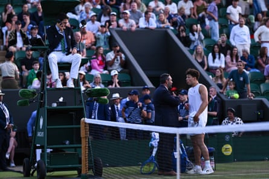

When you’ve had to wait a whole night to finish your match, what’s another 70 seconds between friends? Three aces and an unreturnable kick serve did the job for Ben Shelton as he sealed his place in the third round at Wimbledon on Friday with a 6-2, 7-5, 6-4 win over Rinky Hijikata, the smile on his face a far cry from the understandable frustration he showed when the match was suspended late the previous evening.
The match had been controversially suspended at 9.29pm on Thursday night, with Shelton due to serve for victory. The two players had been in discussion with the umpire, Nacho Forcadell, earlier in the set to see if the match could be suspended because the court was becoming slippery, but the pair played on until the announcement was made at 5-4, prompting jeers from the crowd.
The All England Club told the Guardian that the match had been called off because of fading light, while Shelton said he had been given a “five-minute warning until the Hawk-Eye was going down”. “That was including the changeover, so [he said] there wouldn’t be enough time to complete the game. I was telling him: ‘I only need 60 seconds’. That’s kind of what my goal was when I went out there today.”
Shelton said the umpire had told him he did not want the line-calling system to go down in the middle of a game. “At that point I’m not as upset about that decision. It was a difficult decision that was forced because of what they did earlier.”
When the match was called off, the supervisor spread his arms as Shelton shaped to approach the umpire, blocking his path to the chair. “I don’t think that I ever get disrespectful on the court,” he said. “I try to get my point across. I guess when he saw a guy my size walking quickly towards the umpire, maybe he thought I was ready to throw hands or something. I definitely wasn’t.
“I guess maybe I should apologise to Nacho if he felt scared up in the chair. I was upset in the moment. I wanted to get my point across. I think he was just trying to kind of defuse [the situation] and keep me away from Nacho. I got over it pretty quickly, and then we talked in the gym after.
“I just wanted to give them my thoughts about the situation. They gave me theirs on why everything happened. It didn’t really escalate. It probably looked more tense than it was, the whole holding back or staying in front of me. No, it was nothing.”
Ben Shelton speaks with officials after play was suspended due to darkness against Rinky Hijikata.Photograph: Mike Hewitt/Getty Images
Despite the brevity of action on Friday, Shelton said he had been ready to play two and a half sets if necessary and denied he had wanted to send a message by finishing things off so quickly.
“The only thing I was thinking about today was holding serve, how I was going to hold serve, and putting it in my mind that it was going to be tough and he was going to make every return, and I was going to have to come up with stuff from the baseline or the net,” he said.
“It ended up looking that way because of how it turned out, but that was not in my head at all. I wasn’t trying to do anything. I was just competing, trying to win the match.”
Shelton will play Marton Fucsovics next after the Hungarian beat Gaël Monfils in five sets, in another match held over.